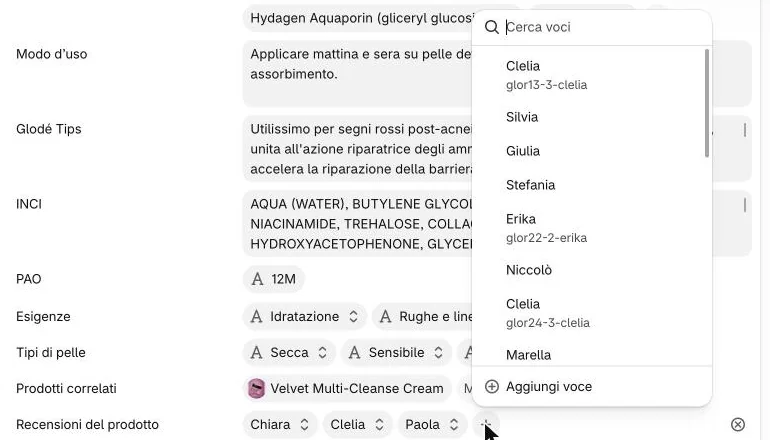
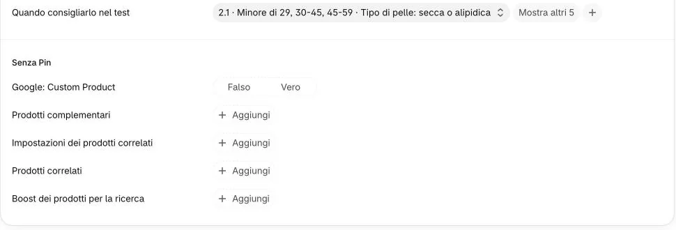
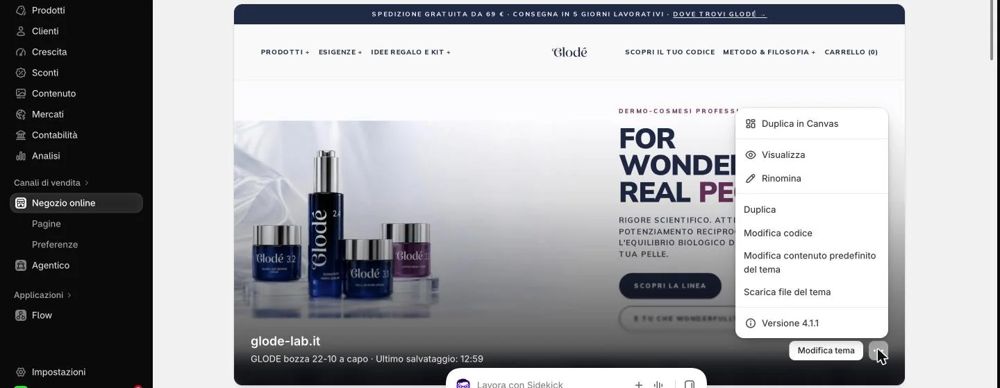
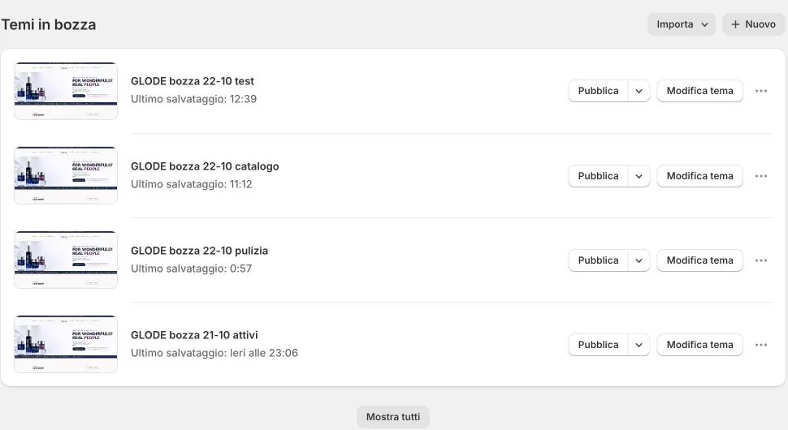
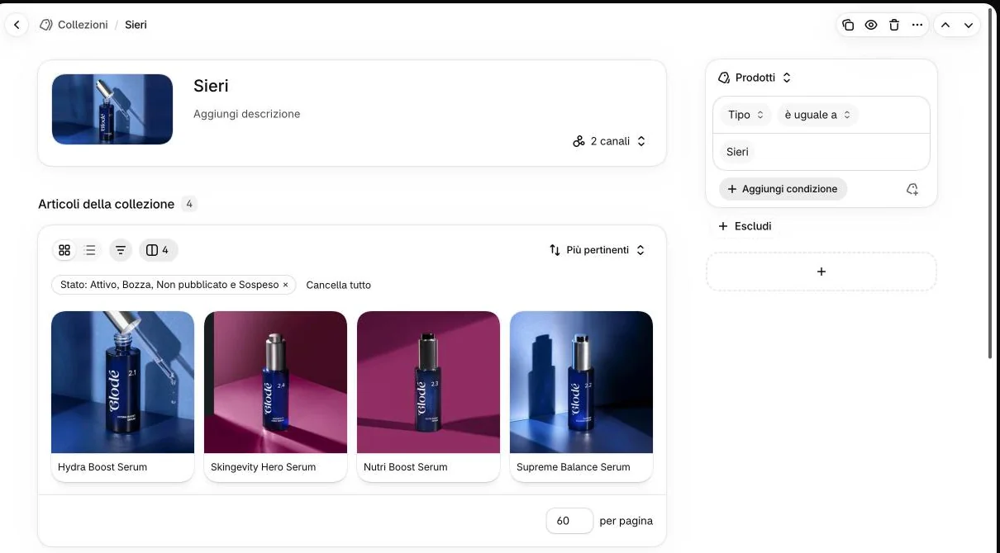
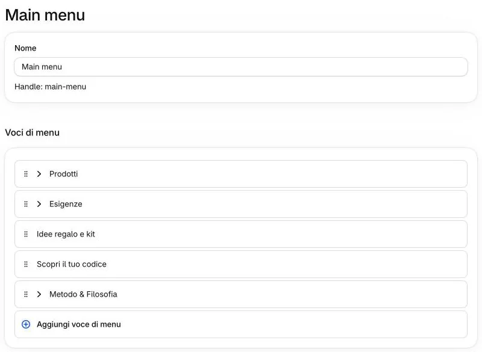

Cosa non toccare
- Da leggere una volta
- Se serve, scriveteci
Queste parti del pannello possono rompere il sito senza dare errori, oppure le gestisce l’agenzia.
-
Non cliccate «Aggiungi definizione» nel riquadro dei campi.
 Non qui
1
Non qui
1
Perché?
Crea un campo nuovo per tutti i prodotti, che il sito comunque non legge. Allo stesso modo, nelle impostazioni dei campi non rinominate, non spostate e non cancellate i campi Glodé: il sito li cerca con quel nome.
-
Nei campi a elenco non cliccate il ⊗ che compare a destra della riga: svuota tutto il campo.
 Non qui
2
Non qui
2
E se l’ho premuto?
Il campo si svuota. Non salvate: uscite dalla pagina senza salvare e confermate di non tenere le modifiche; le voci restano. Per togliere una voce sola si clicca la voce e si sceglie «Cancella» in fondo al suo menu (nel riquadro).
-
Nel menu di una voce o nella finestra del + non cliccate i nomi dell’elenco.

Non qui 3Perché?
L’elenco contiene le voci di tutti i prodotti. Nel menu di una voce, un nome cliccato sostituisce la voce aperta; nella finestra del +, collega al prodotto una voce che appartiene a un altro. Per una voce nuova si usa sempre «Aggiungi voce», in fondo (nel riquadro).
-
Lasciate vuoti i campi sotto «Senza Pin» che il sito non usa.

Non qui 4Quali sono?
Sono campi di app di Shopify: «Prodotti complementari», «Impostazioni dei prodotti correlati», «Prodotti correlati», «Boost dei prodotti per la ricerca» e «Google: Custom Product». Sul sito non si vedono: per «Completa il rituale» si usa il «Prodotti correlati» fra i 14, sopra.
-
In «Negozio online» non cliccate «Modifica tema»; nel menu «⋯» del tema usate solo «Visualizza».

Non qui Non qui 5Perché?
«Modifica tema» e «Modifica codice» cambiano il sito di tutti, subito: ci sono impostazioni tecniche (per esempio la galleria della scheda) che rovinano le foto di tutti i prodotti, e una modifica fatta lì può essere cancellata dal prossimo aggiornamento dell’agenzia. Anche i testi di pagine come «Chi siamo» e «FAQ» stanno nel tema: scriveteci.
Del menu «⋯» non usate neanche «Rinomina», «Duplica» e gli altri comandi: «Visualizza» basta per guardare.
-
Più in basso, in «Temi in bozza», non cliccate mai «Pubblica».

Non qui 6Perché ci sono tante copie?
Sono le versioni preparate dall’agenzia: alcune sono la via di ritorno in caso di problemi. «Pubblica» sostituirebbe il sito di oggi con una di queste, subito. Non cancellatene nessuna.
-
Non cambiate le condizioni delle collezioni automatiche.

Non qui 7Dove lo spiega?
-
In «Contenuto» → «Menu» → «Main menu» non rinominate e non spostate le «Voci di menu».

Non qui 8Perché?
Le voci sotto «Prodotti» devono restare identiche al «Tipo» dei prodotti, e ogni voce deve restare un collegamento alla sua collezione: rinominarla, o puntarla a una pagina, svuota la sua tendina. Le voci nuove chiedetele all’agenzia.
Altro da non toccare?
I flussi automatici di Flow e i tag «centro:…» sugli ordini (servono al conteggio per centro); le app: non installatene senza parlarne con l’agenzia.

Sul sito
Un’impostazione del tema cambia la galleria di tutti i prodotti insieme: per questo il tema lo gestisce l’agenzia. Se qualcosa non vi piace, scriveteci.